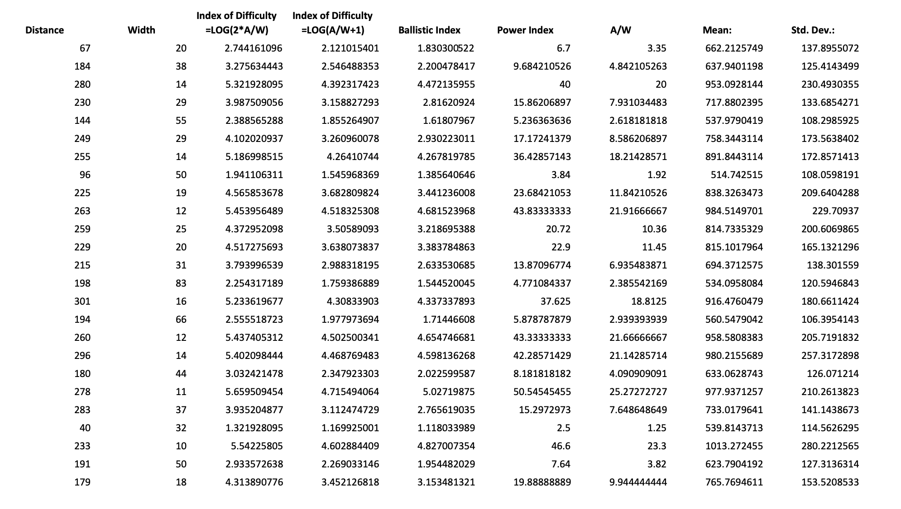

Fitts's Law is one of the cornerstones of HCI research. In 1954, Fitts described the relationship between the target distance, width, and time needed for a target acquisition task. The distance to a target, a button for example, and its size determine the time required to move a pointing device to the target -- “the closer and larger a target is, the faster it is to click on that target.” This later became known as "Fitts's law."
The original investigation consisted of four experiments: two reciprocal tapping tasks, a disc transfer task, and a pin transfer task. In one of the original experiments -- reciprocal tapping task, participants were tasked to move a stylus back and forth between two plates as quickly as possible and tapped the plates at their centers. This arrangement is called "the Fitts’ Paradigm."
Below is a similar, web-based interactive tool for you to experiment. The tool, along with the visualization, aims to support your learning of Fitts' Law.
If you tried the interactive tool above, the data of all your clicks would go into the scatter plot here.
Did you have fun playing with the experiment? (It is okay if you do not want to try it!) Let's take a look at this visualization using an existing dataset!
In a controlled experiment conducted by Ken Goldberg at UC Berkeley, the research team collected a total of 22,540 timing measurements. The dataset has been cleaned up, keeping only timing measurements for cases where the subject successfully clicks on all presented targets within a "reasonable" time period. Cases where subjects were distracted or decided not to complete the experiment were taken out from the dataset. After cleaning, the dataset contains 16,170 valid timing measurements.
This scatter plot is created using the dataset mentioned above. Each circle represent a data point, which is mapped according to the "Index of Difficulty" and "Movement time." Can you spot the pattern here?
Again, the visualization demonstrates the key idea of Fitts' Law: It takes more time to click a target with higher index of difficulty (e.g., an object that is either far away and/or small). The pattern, as shown in the visualization, also fits typical Fitts' regression model.
This project was created as as part of an individual assignment for the SI 649: Information Visualization class at the University of Michigan School of Information in November 2018. The source code is available on my GitHub.